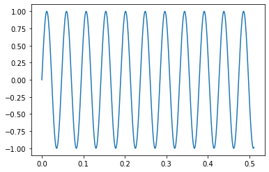
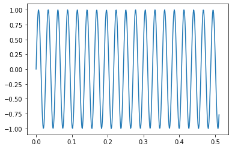

Jupyter Notebook: Python Advanced¶
Jupyter Notebook Explanation¶
blah blah
[1]:
print('hello world')
hello world
[2]:
answer = 42
[3]:
print(answer)
42
Python Basics Recap¶
[4]:
i = 42
[5]:
type(i)
[5]:
int
[6]:
i = '42'
[7]:
type(i)
[7]:
str
[8]:
def foo():
print('hello')
[9]:
type(foo)
[9]:
function
[10]:
foo = i
[11]:
print(foo)
42
[12]:
class Foo:
def foo(self):
print('foo hier')
[13]:
f = Foo()
[14]:
f.foo()
foo hier
[15]:
type(f)
[15]:
__main__.Foo
[16]:
type(Foo)
[16]:
type
[17]:
dir(Foo)
[17]:
['__class__',
'__delattr__',
'__dict__',
'__dir__',
'__doc__',
'__eq__',
'__format__',
'__ge__',
'__getattribute__',
'__gt__',
'__hash__',
'__init__',
'__init_subclass__',
'__le__',
'__lt__',
'__module__',
'__ne__',
'__new__',
'__reduce__',
'__reduce_ex__',
'__repr__',
'__setattr__',
'__sizeof__',
'__str__',
'__subclasshook__',
'__weakref__',
'foo']
Data Types¶
Integers and Floats¶
[18]:
i = 42
[19]:
type(i)
[19]:
int
[20]:
i = 2**64 - 1
[21]:
i
[21]:
18446744073709551615
[22]:
i += 1
[23]:
i
[23]:
18446744073709551616
[24]:
type(i)
[24]:
int
[25]:
if i == 2**64-1:
print('jessas!')
[26]:
i = 2
[27]:
f = 42.666
[28]:
type(f)
[28]:
float
[29]:
i + f
[29]:
44.666
[30]:
type(i)
[30]:
int
[31]:
i.__add__(f)
[31]:
NotImplemented
[32]:
f.__add__(i)
[32]:
44.666
[33]:
i - f
[33]:
-40.666
[34]:
i.__sub__(f)
[34]:
NotImplemented
[35]:
f.__rsub__(i)
[35]:
-40.666
[36]:
10**1000
[36]:
10000000000000000000000000000000000000000000000000000000000000000000000000000000000000000000000000000000000000000000000000000000000000000000000000000000000000000000000000000000000000000000000000000000000000000000000000000000000000000000000000000000000000000000000000000000000000000000000000000000000000000000000000000000000000000000000000000000000000000000000000000000000000000000000000000000000000000000000000000000000000000000000000000000000000000000000000000000000000000000000000000000000000000000000000000000000000000000000000000000000000000000000000000000000000000000000000000000000000000000000000000000000000000000000000000000000000000000000000000000000000000000000000000000000000000000000000000000000000000000000000000000000000000000000000000000000000000000000000000000000000000000000000000000000000000000000000000000000000000000000000000000000000000000000000000000000000000000000000000000000000000000000000000000000000000000000000000000000000000000000000000000000000000000000000000000000000000
Datatype Conversions¶
[37]:
class Foo:
def foo(self):
print('foo hier')
[38]:
f = Foo()
[39]:
type(f)
[39]:
__main__.Foo
[40]:
s = '42'
[41]:
type(s)
[41]:
str
[42]:
i = int(s)
[43]:
i
[43]:
42
[44]:
str(i)
[44]:
'42'
[45]:
type(i)
[45]:
int
[46]:
float('42.666')
[46]:
42.666
[47]:
try:
int('abc')
except ValueError as e:
print(type(e), e)
<class 'ValueError'> invalid literal for int() with base 10: 'abc'
[48]:
int('abc', 16)
[48]:
2748
[49]:
int(42.666)
[49]:
42
[50]:
try:
int('42.666')
except ValueError as e:
print(type(e), e)
<class 'ValueError'> invalid literal for int() with base 10: '42.666'
[51]:
s = 'hello'
[52]:
s += ' world'
[53]:
s
[53]:
'hello world'
[54]:
i
[54]:
42
[55]:
print(i)
42
[56]:
type(f)
[56]:
__main__.Foo
[57]:
print_s = str(i)
[58]:
print_s
[58]:
'42'
[59]:
print(print_s)
42
[60]:
str(i)
[60]:
'42'
[61]:
i.__str__()
[61]:
'42'
[62]:
class Person:
def __init__(self, firstname, lastname):
self.firstname = firstname
self.lastname = lastname
[63]:
joerg = Person('Joerg', 'Faschingbauer')
[64]:
type(joerg)
[64]:
__main__.Person
[65]:
print(joerg)
<__main__.Person object at 0x7f0b165fdf00>
[66]:
class Person:
def __init__(self, firstname, lastname):
self.firstname = firstname
self.lastname = lastname
def __str__(self):
return f'{self.firstname} {self.lastname}'
[67]:
joerg = Person('Joerg', 'Faschingbauer')
[68]:
print(joerg)
Joerg Faschingbauer
Strings: String Methods, Docstrings, …¶
[69]:
s = 'hello'
[70]:
s
[70]:
'hello'
[71]:
s = "hello"
[72]:
s
[72]:
'hello'
[73]:
s = "hello \"world\""
[74]:
s
[74]:
'hello "world"'
[75]:
s = 'hello "world"'
[76]:
s
[76]:
'hello "world"'
[77]:
dos_path = "C:\Dokumente\neues zeug"
[78]:
print(dos_path)
C:\Dokumente
eues zeug
[79]:
dos_path = "C:\\Dokumente\\neues zeug"
[80]:
print(dos_path)
C:\Dokumente\neues zeug
[81]:
dos_path = r"C:\Dokumente\neues zeug"
[82]:
print(dos_path)
C:\Dokumente\neues zeug
Docstrings, Multiline Strings
[83]:
s = '''erste zeile
zweite zeile
'''
[84]:
print(s)
erste zeile
zweite zeile
[85]:
def foo():
'''
Das ist eine Funktion, von der
keiner weiss, was sie tut, weil sie keinen
vernuenftigen Namen hat.
'''
return 666
[86]:
foo
[86]:
<function __main__.foo()>
[87]:
foo.__doc__
[87]:
'\n Das ist eine Funktion, von der\n keiner weiss, was sie tut, weil sie keinen\n vernuenftigen Namen hat.\n '
[88]:
help(foo)
Help on function foo in module __main__:
foo()
Das ist eine Funktion, von der
keiner weiss, was sie tut, weil sie keinen
vernuenftigen Namen hat.
[89]:
class Foo:
'''
Das ist eine Klasse, von der
keiner weiss, was sie tut, weil sie keinen
vernuenftigen Namen hat.'''
def foo(self):
'''
Das ist eine Funktion, von der
keiner weiss, was sie tut, weil sie keinen
vernuenftigen Namen hat.'''
return 666
[90]:
help(Foo)
Help on class Foo in module __main__:
class Foo(builtins.object)
| Das ist eine Klasse, von der
| keiner weiss, was sie tut, weil sie keinen
| vernuenftigen Namen hat.
|
| Methods defined here:
|
| foo(self)
| Das ist eine Funktion, von der
| keiner weiss, was sie tut, weil sie keinen
| vernuenftigen Namen hat.
|
| ----------------------------------------------------------------------
| Data descriptors defined here:
|
| __dict__
| dictionary for instance variables (if defined)
|
| __weakref__
| list of weak references to the object (if defined)
[91]:
s = 'hello'
s1 = 'world'
[92]:
s + ' ' + s1
[92]:
'hello world'
[93]:
try:
42 < s
except Exception as e:
print(type(e), e)
<class 'TypeError'> '<' not supported between instances of 'int' and 'str'
[94]:
s = 'mississippi'
[95]:
s.count('ss')
[95]:
2
[96]:
s.find('ss')
[96]:
2
[97]:
s.find('ss', 3)
[97]:
5
[98]:
s.find('xxx')
[98]:
-1
[99]:
s.index('ss')
[99]:
2
[100]:
try:
s.index('xxx')
except Exception as e:
print(type(e), e)
<class 'ValueError'> substring not found
[101]:
s.center(50)
[101]:
' mississippi '
Python Documentation Overview: https://docs.python.org/3/¶
class str(object='')
[102]:
str()
[102]:
''
[103]:
str('')
[103]:
''
class str(object=b'', encoding='utf-8', errors='strict')
[104]:
str(b'J\xf6rg', encoding='iso-8859-1')
[104]:
'Jörg'
Compound Datatypes¶
List¶
[105]:
l = [1,2,3]
[106]:
l.append(4)
[107]:
l
[107]:
[1, 2, 3, 4]
[108]:
l.append('five')
[109]:
l
[109]:
[1, 2, 3, 4, 'five']
[110]:
del l[0]
[111]:
l
[111]:
[2, 3, 4, 'five']
[112]:
try:
del l[100]
except Exception as e:
print(type(e), e)
<class 'IndexError'> list assignment index out of range
[113]:
l
[113]:
[2, 3, 4, 'five']
[114]:
l.pop(1)
[114]:
3
[115]:
l
[115]:
[2, 4, 'five']
[116]:
l
[116]:
[2, 4, 'five']
[117]:
l = [1,2,3,4,5]
[118]:
l[1:4]
[118]:
[2, 3, 4]
[119]:
l[1:4] = []
[120]:
l
[120]:
[1, 5]
[121]:
l[1:1]
[121]:
[]
[122]:
l[1:1] = [2,3,4]
[123]:
l
[123]:
[1, 2, 3, 4, 5]
[124]:
l[1:4] = ['zwei', 'drei']
[125]:
l
[125]:
[1, 'zwei', 'drei', 5]
[126]:
l[0:0] = [-2, -1, 0]
[127]:
l
[127]:
[-2, -1, 0, 1, 'zwei', 'drei', 5]
[128]:
l.insert(0, -3)
[129]:
l
[129]:
[-3, -2, -1, 0, 1, 'zwei', 'drei', 5]
[130]:
'zwei' in l
[130]:
True
[131]:
5 in l
[131]:
True
[132]:
666 in l
[132]:
False
Set¶
[133]:
s = {1,2,3,4}
[134]:
3 in s
[134]:
True
[135]:
s.add(666)
[136]:
s
[136]:
{1, 2, 3, 4, 666}
[137]:
s.remove(2)
[138]:
s
[138]:
{1, 3, 4, 666}
[139]:
s1 = {1, 2, 3, 4}
[140]:
s2 = {3, 4, 5, 6}
[141]:
s1 | s2
[141]:
{1, 2, 3, 4, 5, 6}
[142]:
s1 - s2
[142]:
{1, 2}
[143]:
s1 ^ s2
[143]:
{1, 2, 5, 6}
[144]:
s1 & s2
[144]:
{3, 4}
[145]:
dir(s1)
[145]:
['__and__',
'__class__',
'__class_getitem__',
'__contains__',
'__delattr__',
'__dir__',
'__doc__',
'__eq__',
'__format__',
'__ge__',
'__getattribute__',
'__gt__',
'__hash__',
'__iand__',
'__init__',
'__init_subclass__',
'__ior__',
'__isub__',
'__iter__',
'__ixor__',
'__le__',
'__len__',
'__lt__',
'__ne__',
'__new__',
'__or__',
'__rand__',
'__reduce__',
'__reduce_ex__',
'__repr__',
'__ror__',
'__rsub__',
'__rxor__',
'__setattr__',
'__sizeof__',
'__str__',
'__sub__',
'__subclasshook__',
'__xor__',
'add',
'clear',
'copy',
'difference',
'difference_update',
'discard',
'intersection',
'intersection_update',
'isdisjoint',
'issubset',
'issuperset',
'pop',
'remove',
'symmetric_difference',
'symmetric_difference_update',
'union',
'update']
Dictionary¶
[146]:
d = {1: 'eins', 2: 'zwei'}
[147]:
type(d)
[147]:
dict
[148]:
d[1]
[148]:
'eins'
[149]:
try:
d[3]
except Exception as e:
print(type(e), e)
<class 'KeyError'> 3
[150]:
3 in d
[150]:
False
[151]:
2 in d
[151]:
True
[152]:
d.get(2)
[152]:
'zwei'
[153]:
v = d.get(2)
[154]:
v
[154]:
'zwei'
[155]:
v = d.get(3)
[156]:
print(v)
None
[157]:
type(v)
[157]:
NoneType
[158]:
if d.get(3) is None:
v = 'drei'
else:
v = d.get(3)
[159]:
print(v)
drei
[160]:
v = d.get(3, 'drei')
print(v)
drei
[161]:
d[3] = 'drei'
[162]:
d[3]
[162]:
'drei'
[163]:
if 4 in d:
v = d[4]
else:
d[4] = 'vier'
v = d[4]
[164]:
v = d.setdefault(5, 'fuenf')
print(v)
fuenf
Iteration¶
[165]:
l = [1, 2, 3, 4]
[166]:
for element in l:
print(element)
1
2
3
4
[167]:
s = {1,2,3,4}
[168]:
for element in s:
print(element)
1
2
3
4
[169]:
d = {1:'eins', 2:'zwei', 3: 'drei'}
[170]:
for element in d:
print(element)
1
2
3
[171]:
for element in d.keys():
print(element)
1
2
3
[172]:
for element in d.values():
print(element)
eins
zwei
drei
[173]:
for element in d.items():
print(element)
(1, 'eins')
(2, 'zwei')
(3, 'drei')
[174]:
for element in d.items():
k = element[0]
v = element[1]
print(k, v)
1 eins
2 zwei
3 drei
[175]:
for k, v in d.items():
print(k, v)
1 eins
2 zwei
3 drei
Tuple unpacking
[176]:
l = [3, 4, 5]
a, b, c = l
[177]:
print(a, b, c)
3 4 5
[178]:
l = [1, 2, 3, 4]
[179]:
try:
a, b, c = l
except Exception as e:
print(type(e), e)
<class 'ValueError'> too many values to unpack (expected 3)
[180]:
a, b, *rest = l
[181]:
print(a, b)
1 2
[182]:
rest
[182]:
[3, 4]
assert¶
[183]:
def foo(bar):
'Compute a foo from a bar string'
assert type(bar) is str
return bar*5
[184]:
foo('hallo')
[184]:
'hallohallohallohallohallo'
[185]:
try:
foo([1, 2, 3])
except AssertionError: # <--- DON'T DO THIS! NEVER EVER!!
pass
References, (Im)mutability¶
[186]:
a = 42
[187]:
id(a)
[187]:
139685905188368
[188]:
b = a
[189]:
id(b)
[189]:
139685905188368
[190]:
a += 1
[191]:
a
[191]:
43
[192]:
b
[192]:
42
[193]:
id(b)
[193]:
139685905188368
[194]:
id(a)
[194]:
139685905188400
[195]:
a = [1, 2, 3]
b = a
[196]:
a is b
[196]:
True
[197]:
id(a) == id(b)
[197]:
True
[198]:
c = a[:]
[199]:
c is a
[199]:
False
[200]:
l1 = [1, [2, 3, 4], 5]
[201]:
len(l1)
[201]:
3
[202]:
l2 = l1[:]
[203]:
l2 is l1
[203]:
False
[204]:
l1
[204]:
[1, [2, 3, 4], 5]
[205]:
l2
[205]:
[1, [2, 3, 4], 5]
[206]:
l1.append(6)
[208]:
l1
[208]:
[1, [2, 3, 4], 5, 6]
[209]:
l2
[209]:
[1, [2, 3, 4], 5]
[210]:
l1[1].append(666)
[212]:
l1
[212]:
[1, [2, 3, 4, 666], 5, 6]
[214]:
l2
[214]:
[1, [2, 3, 4, 666], 5]
Deep copy
[216]:
import copy
[217]:
l1 = [1, [2,3,4], 5]
[218]:
l2 = copy.deepcopy(l1)
[219]:
l1 is l2
[219]:
False
[220]:
l1[1] is l2[1]
[220]:
False
[221]:
class Person:
def __init__(self, firstname, lastname):
self.firstname = firstname
self.lastname = lastname
[227]:
joerg = Person('Joerg', 'Faschingbauer')
[223]:
joerg
[223]:
<__main__.Person at 0x7f0b14487be0>
[226]:
joerg.__dict__
[226]:
{'firstname': 'Joerg', 'lastname': 'Fasschingbauer'}
Strings are immutable
[228]:
s1 = 'hello'
[229]:
id(s1)
[229]:
139685602274352
[230]:
s1 += ' '
[239]:
id(s1)
[239]:
139685561461616
Lists are mutable
[234]:
l = [1,2,3]
[235]:
id(l)
[235]:
139685561690240
[236]:
l.append(4)
[238]:
id(l)
[238]:
139685561690240
And tuples?
[242]:
t = (1, 2, 3)
[243]:
id(t)
[243]:
139685561316032
[244]:
t += (4, 5)
[245]:
id(t)
[245]:
139685595970464
[248]:
try:
t.append(6)
except Exception as e:
print(type(e), e)
<class 'AttributeError'> 'tuple' object has no attribute 'append'
And dictionary? -> frozendict
[249]:
d = {1:'eins', 2:'zwei'}
[251]:
id(d)
[251]:
139685561151488
[252]:
d.setdefault(3, 'three')
[252]:
'three'
[255]:
id(d)
[255]:
139685561151488
Iteration, Generators, Iterator Protocol¶
[263]:
l = [0, 1, 2]
[264]:
print(l)
[0, 1, 2]
[260]:
for element in l:
print(element)
0
1
2
[262]:
for element in range(3):
print(element)
0
1
2
[265]:
r = range(3)
[267]:
for element in r:
print(element)
0
1
2
[270]:
print(r)
range(0, 3)
[272]:
range(3*10**7)
[272]:
range(0, 30000000)
[279]:
for element in l:
print(element)
0
1
2
Iterator Protocol
[275]:
l
[275]:
[0, 1, 2]
[276]:
it = iter(l)
[278]:
type(it)
[278]:
list_iterator
[280]:
next(it)
[280]:
0
[281]:
next(it)
[281]:
1
[282]:
next(it)
[282]:
2
[284]:
try:
next(it)
except Exception as e:
print(type(e), e)
<class 'StopIteration'>
[285]:
r = range(3)
[286]:
it = iter(r)
[287]:
next(it)
[287]:
0
[288]:
next(it)
[288]:
1
[289]:
next(it)
[289]:
2
[291]:
try:
next(it)
except Exception as e:
print(type(e), e)
<class 'StopIteration'>
Enter yield
[303]:
def my_iterable():
print('before 0')
yield 0
print('before 1')
yield 1
print('before 2')
yield 2
print('done')
[304]:
m = my_iterable()
[305]:
type(m)
[305]:
generator
[306]:
it = iter(m)
[307]:
next(it)
before 0
[307]:
0
[308]:
next(it)
before 1
[308]:
1
[309]:
next(it)
before 2
[309]:
2
[310]:
try:
next(it)
except Exception as e:
print(type(e), e)
done
<class 'StopIteration'>
[301]:
m = my_iterable()
[302]:
for element in m:
print(element)
0
1
2
[316]:
def even_numbers(start, end):
run = start
while run < end:
if run % 2 == 0:
yield run
run += 1
[317]:
for element in even_numbers(5, 20):
print(element)
6
8
10
12
14
16
18
AAARGHHH¶
[319]:
def f(a, b):
print(a, b)
[320]:
f(1, 2)
1 2
[321]:
l = [1,2]
[322]:
f(l[0], l[1])
1 2
[323]:
f(*l)
1 2
[324]:
def f(*args):
print(args)
[326]:
f(1, 2)
(1, 2)
[329]:
f(1, 2, 3)
(1, 2, 3)
[330]:
t = (1,2,3)
[332]:
len(t)
[332]:
3
[344]:
t.__len__()
[344]:
3
[341]:
def my_print(*args):
my_args = ('hallo, ',) + args
print(*my_args)
[343]:
my_print(1, 2)
hallo, 1 2
Comprehensions¶
List Comprehension¶
[345]:
r = range(5)
[346]:
squares = []
for i in r:
squares.append(i**2)
[347]:
squares
[347]:
[0, 1, 4, 9, 16]
[348]:
squares = [i**2 for i in range(5)]
[349]:
squares
[349]:
[0, 1, 4, 9, 16]
[357]:
even_squares = [i**2 for i in range(10) if i%2 == 0]
[356]:
even_squares
[356]:
[0, 2, 4, 6, 8]
Generator Expresssions¶
[358]:
def squares_fun():
sqs = []
for i in range(5):
sqs.append(i**2)
return sqs
squares = squares_fun()
[360]:
squares
[360]:
[0, 1, 4, 9, 16]
[361]:
squares = [i**2 for i in range(5)]
[362]:
squares
[362]:
[0, 1, 4, 9, 16]
[363]:
def squares_gen():
for i in range(5):
yield i**2
squares = squares_gen()
[365]:
squares
[365]:
<generator object squares_gen at 0x7f0aefb94f20>
[367]:
for i in squares:
print(i)
[373]:
squares = (i**2 for i in range(5))
[374]:
squares
[374]:
<generator object <genexpr> at 0x7f0aefb955b0>
[375]:
for i in squares:
print(i)
0
1
4
9
16
[376]:
for i in squares:
print(i)
[377]:
squares = (i**2 for i in range(5))
[379]:
try:
squares[3]
except Exception as e:
print(type(e), e)
<class 'TypeError'> 'generator' object is not subscriptable
[380]:
squares_list = list(squares)
[382]:
squares_list
[382]:
[0, 1, 4, 9, 16]
[383]:
list('abc')
[383]:
['a', 'b', 'c']
[384]:
for c in 'abc':
print(c)
a
b
c
Dictionary Comprehension¶
[385]:
d = {
1: 1,
2: 4,
3: 9,
# ...
}
[386]:
d = {i: i**2 for i in range(10)}
[388]:
d
[388]:
{0: 0, 1: 1, 2: 4, 3: 9, 4: 16, 5: 25, 6: 36, 7: 49, 8: 64, 9: 81}
[389]:
type(d)
[389]:
dict
Set Comprehension¶
[390]:
s = {1, 4, 9, 16,} # ...
[391]:
s = {i**2 for i in range(10)}
[393]:
s
[393]:
{0, 1, 4, 9, 16, 25, 36, 49, 64, 81}
[394]:
set('foobar')
[394]:
{'a', 'b', 'f', 'o', 'r'}
[395]:
set(['foo', 'bar'])
[395]:
{'bar', 'foo'}
Trailing comma? …
[397]:
t = (1, 2, 3)
[399]:
type(t)
[399]:
tuple
[400]:
t = (666)
[402]:
type(t)
[402]:
int
[403]:
t = (42,)
[404]:
type(t)
[404]:
tuple
[406]:
t
[406]:
(42,)
[407]:
len(t)
[407]:
1
[408]:
t.__len__()
[408]:
1
eval()¶
[414]:
expr_str = '[1,2,3]'
[415]:
type(expr_str)
[415]:
str
[416]:
expr = eval(expr_str)
[418]:
type(expr)
[418]:
list
[419]:
expr
[419]:
[1, 2, 3]
Functional Tools¶
enumerate()¶
[409]:
l = ['Joerg', 'Caro', 'Johanna', 'Philipp']
i = 0
for element in l:
print(i, element)
i += 1
0 Joerg
1 Caro
2 Johanna
3 Philipp
[420]:
for i, element in enumerate(l):
print(i, element)
0 Joerg
1 Caro
2 Johanna
3 Philipp
map(), filter()¶
[421]:
[i**2 for i in range(5)]
[421]:
[0, 1, 4, 9, 16]
[423]:
def sq(i): return i**2
for num in map(sq, range(5)):
print(num)
0
1
4
9
16
[426]:
for num in map(lambda i: i**2, range(5)):
print(num)
0
1
4
9
16
Same with a custom generator expression
[427]:
for num in (i**2 for i in range(5)):
print(num)
0
1
4
9
16
filter()¶
[428]:
def even(i):
return i%2 == 0
[429]:
for num in filter(even, range(5)):
print(num)
0
2
4
[430]:
for num in filter(lambda i: i%2 == 0, range(5)):
print(num)
0
2
4
[431]:
for num in (i for i in range(5) if i%2 == 0):
print(num)
0
2
4
Data Science¶
[432]:
import pandas as pd
[433]:
import numpy as np
[436]:
df = pd.read_csv('data.csv', skiprows=1, sep=';')
[437]:
df
[437]:
| timestamp | hz2 | hz3_5 | |
|---|---|---|---|
| 0 | 2023-10-26:14:46:04 | 0.000566 | 0.000729 |
| 1 | 2023-10-26:14:46:04 | 0.132363 | 0.229977 |
| 2 | 2023-10-26:14:46:04 | 0.260597 | 0.444942 |
| 3 | 2023-10-26:14:46:04 | 0.385433 | 0.638212 |
| 4 | 2023-10-26:14:46:04 | 0.502710 | 0.796519 |
| ... | ... | ... | ... |
| 507 | 2023-10-26:14:46:09 | -0.936250 | -0.972326 |
| 508 | 2023-10-26:14:46:09 | -0.974442 | -0.999992 |
| 509 | 2023-10-26:14:46:09 | -0.995683 | -0.973719 |
| 510 | 2023-10-26:14:46:09 | -0.999245 | -0.895850 |
| 511 | 2023-10-26:14:46:09 | -0.985202 | -0.768778 |
512 rows × 3 columns
[438]:
points = np.arange(stop=512*0.001, step=0.001)
[443]:
df['timestamp'] = points
[444]:
df
[444]:
| timestamp | hz2 | hz3_5 | |
|---|---|---|---|
| 0 | 0.000 | 0.000566 | 0.000729 |
| 1 | 0.001 | 0.132363 | 0.229977 |
| 2 | 0.002 | 0.260597 | 0.444942 |
| 3 | 0.003 | 0.385433 | 0.638212 |
| 4 | 0.004 | 0.502710 | 0.796519 |
| ... | ... | ... | ... |
| 507 | 0.507 | -0.936250 | -0.972326 |
| 508 | 0.508 | -0.974442 | -0.999992 |
| 509 | 0.509 | -0.995683 | -0.973719 |
| 510 | 0.510 | -0.999245 | -0.895850 |
| 511 | 0.511 | -0.985202 | -0.768778 |
512 rows × 3 columns
[445]:
import matplotlib.pyplot as plt
[447]:
%matplotlib inline
[453]:
plt.plot(df['timestamp'], df['hz2'])
[453]:
[<matplotlib.lines.Line2D at 0x7f0ad44b8f70>]

[451]:
plt.plot(df['timestamp'], df['hz3_5'])
[451]:
[<matplotlib.lines.Line2D at 0x7f0ad23371f0>]

[ ]: